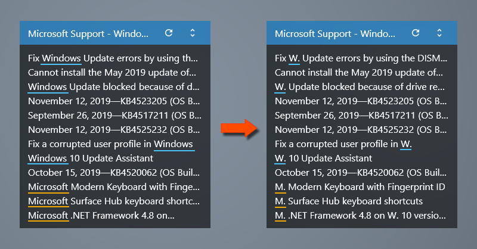
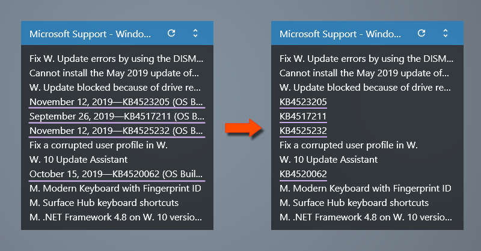
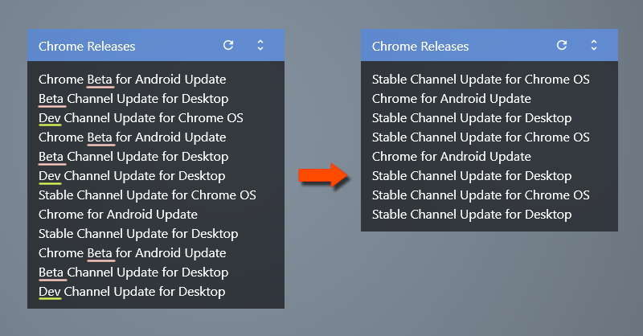

Skin.ini | ITEM_TITLE_SUBSTITUTE
Keyword filtering using the regular expressions.
Here are some examples.
"pattern":"replacement","pattern":"replacement",...Here are some examples.
Shorten a word.
ITEM_TITLE_SUBSTITUTE="Microsoft":"M.","Windows":"W."
Shorten a title.
ITEM_TITLE_SUBSTITUTE=".+?(KB\d{7}).+":"\1"
Hide items if title matches KEYWORDS.
ITEM_TITLE_SUBSTITUTE="(?si)^.*?\b(?:Beta|Dev)\b.*":"" If title is empty(""), the item will not be listed.
Show items if title matches KEYWORDS.
ITEM_TITLE_SUBSTITUTE="(?si)(?(?!.*?\b(?:Stable)\b)^.+)":"" If title is empty(""), the item will not be listed.
If title is empty(""), the item will not be listed.
A summary of the keyword filtering.
Keyword filtering is defined ITEM_TITLE_SUBSTITUTE="pattern":"replacement"
of [Variables] section in the Skin.ini file.
The format is "pattern":"replacement","pattern":"replacement",...
You can hide stories those you don't need.
ITEM_TITLE_SUBSTITUTE="(?si)^.*?\b(?:KEYWORD1|KEYWORD2|KEYWORD3)\b.*":""
You can show stories what you are interested in.
ITEM_TITLE_SUBSTITUTE="(?si)(?(?!.*?\b(?:KEYWORD1|KEYWORD2|KEYWORD3)\b)^.+)":""
| means alternative like OR.
Just copy & paste the examples, and replace the KEYWORD what you like.